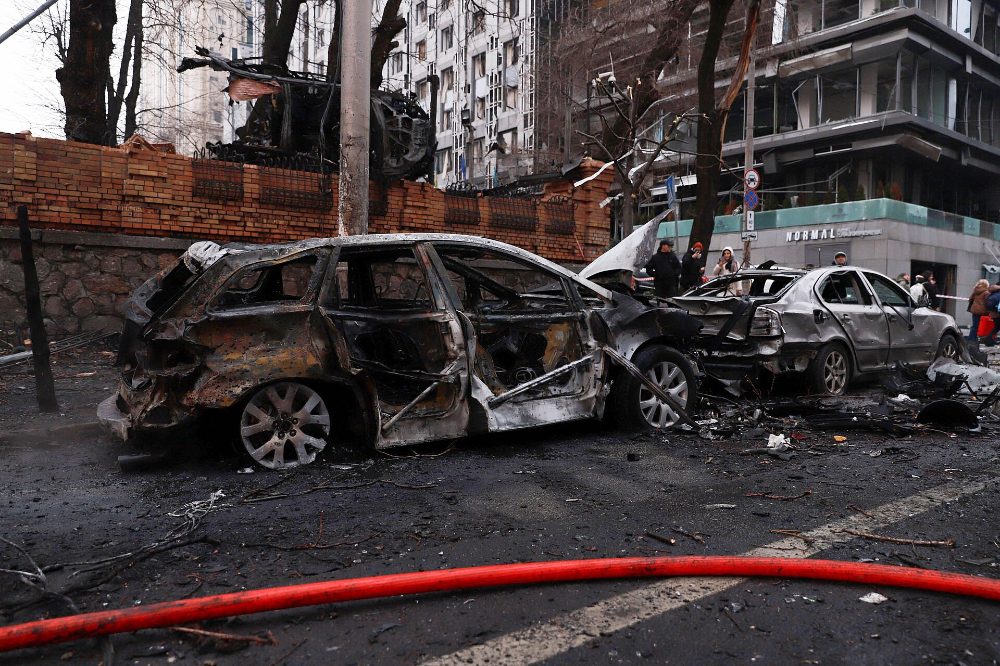

Russian Drone Hits 16-Storey Building in Central Kyiv: 14-Year-Old Killed
At least 7 people were injured in the 25 September morning strike; Ukraine's president said 282 drones were launched overnight.

On the morning of 25 September, a Russian drone struck a 16-storey residential building in the central Pechersk district of Kyiv. According to the National Police, the drone hit between the 10th and 11th floors.
Casualties
A 14-year-old was killed and at least 7 people were injured. Rescue workers cleared rubble from the damaged building.
A wider attack
President Volodymyr Zelensky said eight regions came under attack that night. Russia launched 282 attack drones and several types of missile overnight. One person was also killed in the Odesa region.
The situation
In recent weeks Russia has targeted Kyiv and its surroundings with near-constant drone barrages; these faster, high-flying drones are harder to intercept.
In brief
- Date: 25 September 2026, morning
- Place: central Kyiv, Pechersk district
- Target: 16-storey residential building
- Killed: a 14-year-old
- Injured: at least 7
- Overnight drones: 282, across 8 regions